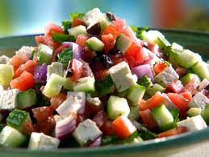

Shepherd Salad

Description
This dish is a crowd favorite at many Turkish festivals and celebrations.
Ingredients
- Roma Tomatoes
- Cucumbers
- Parsley
- Black Olives
- Red Onion
- Cider Vinegar
- Lemon Juice
- Olive Oil
- Salt and Pepper
- Greek Feta Cheese
Steps
- Seed and chop 3 Roma tomatoes and 2 cucumbers
- Pick the leaves of 1 bunch of parsley
- Pit and half one half cup of black olives
- Chop half a small red onion
- Combine 2 tbsp of cider vinegar, 2 tbsp of lemon juice, and 4 tbsp of olive oil
- Dice 8 ounces of Greek feta cheese
- Combine all ingredients except for the feta cheese
- Let sit at room temperature for 1 hour
- Add in feta cheese and stir